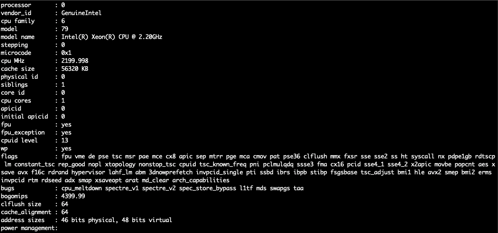

Make your computer be temporarily accessible on the internet. - Ngrok
Use Ngrok to temporarily obtain a publicly accessible URL for your computer.

In development, it is often encountered that testing on the local machine requires a publicly accessible URL for services.
Or webhooks to use as a callback. Moreover, these services often require HTTPS certification.
Are there any other options besides setting up a cloud server for this purpose?
Ngrok
As a forwarding server, it can redirect external requests to a specified port on your machine.
The principle is to connect to the Ngrok cloud server, which exposes the address you specify on your local machine.
Ngrok then provides a public URL for accessing the content.
The advantages are that it is fast, provides HTTPS services for enhanced security, and you can even set up password protection.
Official documentation and download links
Install
Mac
brew install ngrok
Linux
Determine the hardware architecture of your host machine.
cat /proc/cpuinfo

Download the specified file from the official website
and follow the steps to install.
Or just install using snap
sudo apt update
sudo apt install snapd
sudo snap install ngrok
Start service
Enter the command to start and listen on port 8080.
ngrok http 8080
You will then be able to see the publicly accessible URL.
註冊 ngrok
You can use the service without registering, but after a period of time, the connection will be terminated.
And upon restarting, a new URL will be assigned.
However, when testing webhooks or providing the URL to others, having to reassign the URL means reconfiguring webhooks or notifying others, which can be inconvenient.
After logging into your Ngrok account, go to the Your Authtoken
page.
Copy the Authtoken and then enter it in the terminal using the following command:
ngrok config add-authtoken {Your Authtoken}
Seeing the following message indicates that the authentication process is complete.
Authtoken saved to configuration file: /Users/user_name/.ngrok2/ngrok.yml
After completing the registration, you can use the Ngrok service without worrying about the connection being terminated after a while.